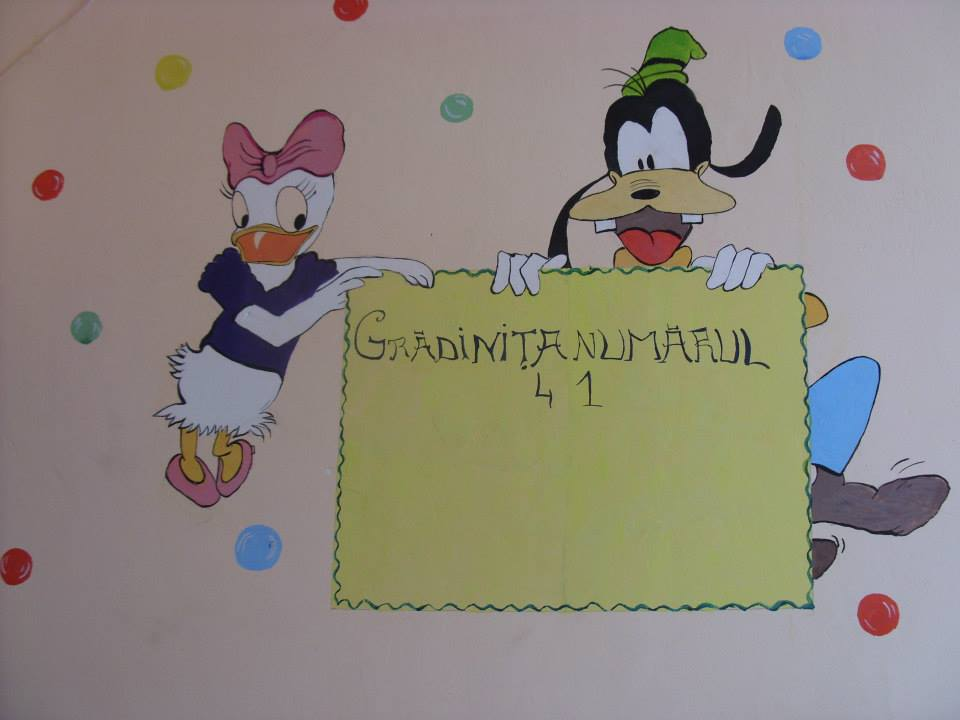

Proiect educational
CLASA A VII-a A"PARTENERIAT EDUCATIONAL CU SCOALA DE SUBOFITERI DE POMPIERI SI PROTECTIE CIVILA "PAVEL ZAGANESCU" BOLDESTI
In cadrul parteneriatului incheiat intre Scoala Gimnaziala "Grigore Moisil", Ploiesti si Scoala de Subofiteri de Pompieri si Protectie Civila "Pavel Zaganescu" - Boldesti, elevii clasei a VII-a A, indrumati de prof. Radu Laura, au participat vineri, 7.11.2014, la depunerea juramantului de credinta fata de tara a celor 125 de elevi ai scolii din Boldesti. La festivitate au participat secretarul de stat in Ministerul Afacerilor Interne, seful Departamentului pentru Situatii de Urgenta, dr. Raed Arafat, inspectorul general al Inspectoratului General pentru Situatii de Urgenta, colonel dr. Nicolae Cornea, prefectul judetului Prahova, Rodica Paraschiv, precum si reprezentanti ai administratiei publice, parinti, rude si prieteni ai elevilor. Dupa incheierea momentului festiv, elevii Scolii Gimnaziale "Grigore Moisil", Ploiesti au urmarit exercitii demonstrative, au vizitat spatiile de invatamant care contribuie la formarea elevilor acestei scoli ca salvatori .

O SEARA DE HALLOWEEN
CLASA A VII-a A
Costumati in personaje de poveste mai mult sau mai putin infioratoare, elevii clasei a VII-a A au organizat vineri, 31.10.2014, intr-un décor specific, activitatea "O SEARA DE HALLOWEEN". Considerand intreaga activitate ca pe un prilej de a ne cunoaste colegii si in alte context, ne-am intrecut pe parcursul a noua probe ( Sa continuam povestea, Fuga pe cartoane, Anagrame, Oglinda, Cuvinte ascunse, Dans, Tunelul, Mumia, Telefonul fara fir) , la finele carora am primit diplome si am vizionat filmul "Halloween".

CALATORI IN BRASOV
CLASA A VII-a ACALATORI IN BRASOV
Sambata, 18.10.2014, insotiti de d-na prof. Radu Laura, am redescoperit obiective importante ale Brasovului si Branului, locuri incarcate de istorie si cultura – PRIMA SCOALA ROMANEASCA din SCHEII BRASOVULUI, BISERICA NEAGRA si CASTELUL BRAN.


Proiect educational
Vineri, 31 octombrie 2014, la clasa pregatitore B, coordonata de prof.inv.primar Constantin Maria, s-a desfasurat o activitate de Halloween, in cadul proiectului educational "Invatam si ne jucam impreuna cu parintii nostri". Elevii, sub indrumarea doamnei si domnului Ionescu, parintii elevului Ionescu Radu, au invatat sa confectioneze "vrajitoare" din hartie si "minidovlecei". Clasa a fost impodobita cu dovleci sculptati de parinti, iar copiii au lucrat cu placere si au primit bomboane ca rasplata pentru munca lor. Felicitari tuturor parintilor implicati ! Iata cateva imagini de la aceasta activitate:


Gradinita 41
Realizarile noastre
Cerc pedagogic- biologie
In data de 31 octombrie 2014 , la Scoala noastra s-a desfasurat activitatea Cercului Pedagogic de biologie nr.2 .
Activitatea a fost sustinuta de doamna profesor Adriana Sacalus.
Tema cercului a fost " Stimularea invatarii prin cooperare utilizand metodele activ-participative" .
Elevi ai clasei a VIII a A au participat la activitatea demonstrativa " Ecosistemele naturale " ,
iar un grup de elevi din clasa a VI a au realizat sceneta " Omul si natura " .
Elevii au dorit sa transmita prin ceea ce au realizat un mesaj privind importanta protejarii mediului în care traim .
Activitatea se incheie cu prezentarea de catre prof. Adriana Sacalus a doua proiecte de mediu .
Elevii Scolii Gimnaziale "Grigore Moisil" la Noaptea Muzeelor
Editia a X- a - 17 Mai 2014
Atmosfera de sarbatoare, oameni curiosi, veniti sa participe cu mic, cu mare, la acesta sarbatoare a artei, a frumosului si-a maretiei. Noaptea Europeana a Muzeelor este un eveniment de succes initiat de Ministerul Culturii si Comunicarii din Franta si aflat deja la a zecea editie. Evenimentul este patronat, in mod traditional, de Consiliul Europei, de UNESCO si de Consiliul International al Muzeelor (ICOM). La aceste evenimente culturale prilejuite de cea de-a zecea editie a Noptii Muzeelor - vernisajul expozitiei temporare "Interferente culturale romano-bulgare la Dunarea de Jos" organizata de Muzeul Judetean de Istorie si Arheologie si expozitia "Ploiestiul vechi si nou"din cadrul Muzeului de Arta "Ion Quintus"- au participat, alaturi de parinti, elevii clasei a VI-a C si doamna profesor Necula Luminita. Vizitarea celor doua expozitii de arta a reprezentat pentru elevii nostri o evadare in lumea frumosului, a istoriei si a valorilor nationale si europene, elevii si doamna diriginta Necula Luminita marturisind ca "oamenii erau mai frumos, mai buni, mai altfel"
"